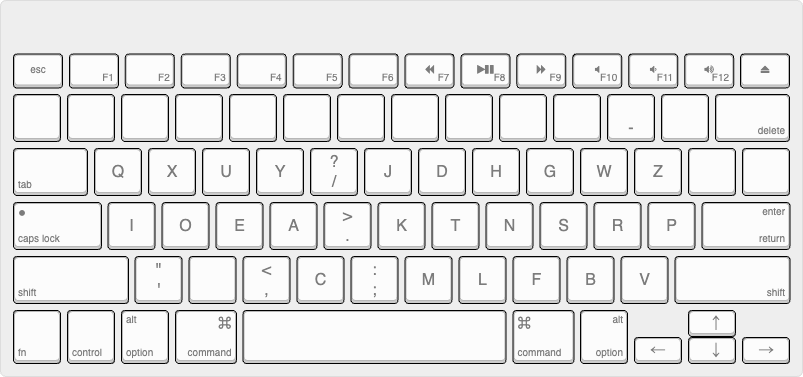
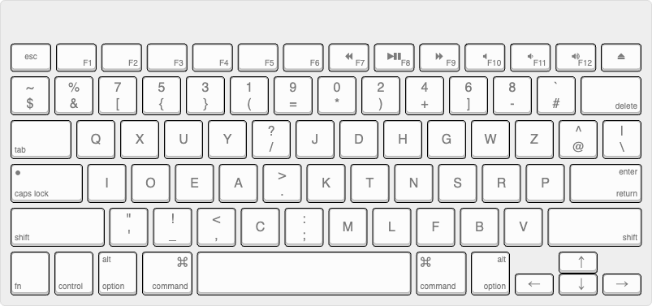
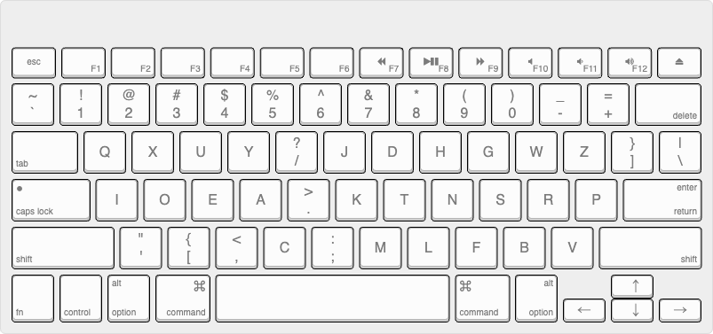

自分がAstarte+配列と呼んでいるものについて、定義をはっきりしておかなければならないと思うので、以下のように定義したい。

Astarteバーストに比べて C と . の位置を入れ替えている点が変更点だが、好みもあると思うのでこれはさほど重要ではなく、オリジナルのAstarteに比べてAstarteバーストと同じくZ, P を右手小指に位置させていることの方が重要。（Colemak Mod-DHにちなんで、Astarte Mod-ZPとでも呼ぶべきか。）
したがってAstarteの改良版の意味で + を付けていて、個人的には広義にAstarteバーストも含んだ意味合いを持たせている。
空白部分や特殊キーはさほど重要ではないが、特にAstarte+は Z, P, V が右手小指に幅を効かせているため、右側の記号に制約をうける。
自分はProgrammer Dvorakライクにして、記号は以下のように定義して使っている。これを自分は Programmer Astarte+ (v0.3) と呼んでいた。*1

（ちなみに、Programmer Dvorakも同じく、数字キーがやや打ちづらいため、JISで英数・かなをShiftとすると手が楽。漢字切り替えは自分はCtrl+Space *2 で行っている。）
一般的なQwertyと最大限互換性をもたせるなら、以下のような記号配置になると思う。

上記はUSの場合なので、JISの場合は異なる。
核の部分が変わらなければ打鍵感はさほど変わらないはずなので、今回はあくまで概念的な説明にとどめて、設定ファイル等は新規には上げず、以前のままにしておこうと思う。
なお最初の定義にしている意図としては、自分はCtrlQwerty / CmdQwerty 設定を行っていて、Ctrl + ● はQwertyが適用されるようにしているので、Ctrl + ZやCtrl + XなどがQwerty互換である必要がないのが一つと、オリジナルのAstarteでは左手がかなり多用されるので、Astarteバーストの改良を支持しているというのがある。